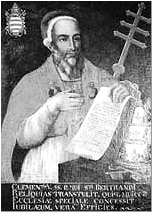

|
Von 1307 bis 1314
[13. Oktober 1311] [3. April 1312]
 Gleich zu Beginn der Verhöre sterben sechsunddreißig Ritter in Paris unter der Folter. Philipp der Schöne setzt alles daran, den Orden und die Ritter vor den Augen der Öffentlichkeit zu diskreditieren. Der Papst seinerseits sieht seine Autorität durch die Männer des Königs bedroht und setzt sich deshalb zunächst für die Unschuld der Templer ein. Aber Philipp weiß den Papst bald zu besänftigen und dessen Skrupel zu beseitigen. Die theologische Fakultät applaudiert den vom König ergriffenen Maßnahmen und fordert auf der in Tours einberufenen Versammlung der Stände (24. März 1308) im Namen des französischen Volkes die Bestrafung der Angeklagten. Der König sei nicht auf die Zustimmung des Papstes angewiesen, um als schuldig befundene Häretiker ihrer gerechten Strafe zuzuführen.
Gleich zu Beginn der Verhöre sterben sechsunddreißig Ritter in Paris unter der Folter. Philipp der Schöne setzt alles daran, den Orden und die Ritter vor den Augen der Öffentlichkeit zu diskreditieren. Der Papst seinerseits sieht seine Autorität durch die Männer des Königs bedroht und setzt sich deshalb zunächst für die Unschuld der Templer ein. Aber Philipp weiß den Papst bald zu besänftigen und dessen Skrupel zu beseitigen. Die theologische Fakultät applaudiert den vom König ergriffenen Maßnahmen und fordert auf der in Tours einberufenen Versammlung der Stände (24. März 1308) im Namen des französischen Volkes die Bestrafung der Angeklagten. Der König sei nicht auf die Zustimmung des Papstes angewiesen, um als schuldig befundene Häretiker ihrer gerechten Strafe zuzuführen.
Jacques de Molay wird mit anderen Würdenträgern des Ordens zum Papst geschickt, zu einer persönlicher Anhörung. Ihre Reise endet jedoch in Chinon, wo sie von Kardinälen einem Verhör unterzogen werden. Einige Historiker glauben zu wissen, dass Clemens V. seine Tiara von Philipp dem Schönen erhalten hatte, allerdings zu verschiedenen Bedingungen. Eine davon wäre die Auflösung des Templerordens gewesen. Während der ersten Verhöre gestehen zahlreiche Ritter die ihnen vorgelegten Freveltaten, nach allgemeiner Meinung legt auch der Großmeister ein Geständnis ab - auch er wie die anderen gefangenen Templer aus Angst vor der Folter oder dem Tod oder aufgrund der Hoffnung, günstige Bedingungen für den Orden erwirken zu können, wenn der Politik des Königs kein Widerstand entgegengebracht würde.
Da sich der Papst gezwungen sieht, dem brutalen Verfahren, dessen eigentliches Ziel die Auflösung des Ordens ist, den Anschein der Rechtskräftigkeit zu verleihen, beraumt er 1308 ein ökumenisches Konzil für das Jahr 1310 in Vienne ein (das Konzil findet allerdings erst im Jahr 1311 statt). Gleichzeitig richtet er eine Untersuchungskommission ein, die sich in Paris einfinden und dort allgemeine Informationen zum Orden sammeln soll, um die notwendige Grundlage für den Beschluss des Konzils zu schaffen. Mit der Bulle "Faciens misericordiam" wird das Erscheinen der Templer vor dem Konzil bestimmt, das über das Schicksal des Ordens entscheiden soll.
Im Beisein der päpstlichen Abgesandten werden Jacques de Molay in Vulgärlatein die einzelnen Anklagepunkte vorgelesen. Als er den Inhalt der apostolischen Briefe vernimmt, aus denen hervorgeht, dass er in Chinon verschiedene Geständnisse abgelegt hätte, zeigt er sich erstaunt und erzürnt angesichts einer derartigen Behauptung.
Nach dem Großmeister werden zahlreiche Templer verhört. Die Angelegenheit nimmt beeindruckende und außergewöhnliche Züge an: Die Ritter zeigen Würde sich selbst und ihrem Orden wie auch den großen Familien gegenüber, denen sie entstammen. Die meisten der Templer hatten unter der Folter oder aus Angst ein Geständnis vor den Inquisitoren abgelegt, widerrufen dies jedoch vor der päpstlichen Kommission. Sie klagen nachdrücklich über die Grausamkeiten, deren Opfer sie sind, und erklären mit Vehemenz, den Orden mit Körper und Seele, vor allen und gegen alle, gegen alle lebenden Menschen - mit Ausnahme des Papstes und des Königs - verteidigen zu wollen.
Der Großmeister verlangt immer und immer wieder, vor den Papst gebracht zu werden, dessen alleinigem Urteil er untersteht. 546 Templer - teils Templer, die ein Geständnis abgelegt haben, teils Templer, die den Druckmitteln ihrer Folterknechte widerstehen konnten - schließen sich zu einer Protestbewegung zusammen, um den Orden zu verteidigen. Bald bringen auch andere Ritter, diejenigen, die in den Kerkern Frankreichs inhaftiert sind, die Bitte vor, an dieser ehrenvollen Aktion teilnehmen zu dürfen, und werden zu diesem Zweck in die Gefängnisse der Hauptstadt überführt. Die Zahl der Verteidiger des Ordens wächst damit auf etwa 900 an. Eine Rechtfertigung des Ordens war nicht schwer und da die Bewegung zunehmend Erfolg erzielt, greifen der König und seine Männer ohne zu zögern zu einem ebenso grausamen wie wirkungsvollen Mittel: Die Ritter, die ihre ersten Geständnisse widerrufen haben und nun die Unschuld des Ordens proklamieren, sollen dem Urteil der Inquisitoren unterstellt werden.
Im Frühjahr scheint es für die Templer somit zunächst nicht allzu schlecht zu stehen. Eine wahre Legion von Verteidigern, vertreten durch reguläre Prokuratoren, stärkt dem Orden in Paris den Rücken. Für die Gegner des Ordens heißt es deshalb, schnell und entschlossen zu handeln, wenn die Wahrheit nicht ans Licht dringen soll. Und so geschieht es - noch nie haben die Gegner der Templer auf ein derart skandalöses Mittel zurückgegriffen. Sie profitieren von dem Doppelverfahren gegen den Orden und gegen dessen Mitglieder sowie von der Tatsache, dass die Pariser Richter im Templerprozess ihrem Befehl gehorchen, um alle Zeugen im Prozess gegen den Orden in Todesangst zu versetzen. Die Urteilssprechung über die Templer im Bistum Paris ist gemäß den Rundschreiben des Papstes eine Angelegenheit des Provinzkonzils unter dem Vorsitz des Erzbischofs von Sens, der ebenfalls den Pariser Konzilen vorsitzt.
Der Erzbischof von Sens ist jedoch der Bruder eines der wichtigsten Minister des Königs, Enguerrand de Marigny. Er ruft in Paris sein Provinzkonzil ein. Dieses Inquisitionsgericht hat das Recht, ohne Anhörung der Angeklagten ein Urteil zu sprechen und dieses unmittelbar zu vollstrecken. Den Prokuraten der Gefangenen entgeht nicht die schreckliche Gefahr, die durch die plötzliche Einberufung dieses Konzils entsteht. Am 10. Mai 1310 weisen sie die päpstliche Kommission darauf hin. Doch kaum hat der Vorsitzende der Kommission, der Erzbischof von Narbonne, diese Anschuldigung gegen ein geplantes Attentat vernommen, zieht er sich mit der Bemerkung zurück, "er habe noch einer Messe beizuwohnen oder eine Messe abzuhalten". Die anderen Kommissare wissen nichts darauf zu erwidern: "Euch gehört unser ganzes Mitgefühl, doch der Erzbischof von Sens bildet sich sein eigenes Urteil. Darauf haben wir keinen Einfluss."
Die Templer, die auf dem Widerruf ihrer Geständnisse beharren, werden als rückfällige Ketzer der weltlichen Justiz übergeben und zum Tod durch Feuer verurteilt. Nicht geständige Templer werden als nicht reumütige Sünder zu lebenslanger Kerkerhaft verurteilt. Was die Templer betrifft, die die gestandenen Verbrechen der Gottlosigkeit und Verdorbenheit, die den Ordensmitgliedern zugeschrieben wurden, nicht widerrufen haben, diese Templer werden freigesprochen und erhalten als reumütige Sünder die Absolution. Um die angeblich Rückfälligen anzuklagen, zu verhören und zu richten, sie zum Tod auf dem Scheiterhaufen zu verurteilen und das Urteil zu vollstrecken, bedarf es eines einzigen Tages. Vom Montag, dem 11. Mai, bis zum folgenden Morgen. An diesem Tag finden 54 Ritter in Paris den Tod. Die vom Erzbischof von Sens und seinen Suffraganbischöfen als rückfällige Ketzer verurteilten Templer werden auf Karren gehieft und zwischen dem Wald von Vincennes und der Windmühle von Paris, vor dem Stadttor Saint-Antoine, öffentlich verbrannt.
In den Protokollunterlagen werden einige der Ritter namentlich erwähnt, die unter Qualen in den Flammen sterben mussten. Zu ihnen gehören Gaucerand de Buris, Guido de Nici, Martin de Nici, Gaultier de Bullens, Jacques de Sansy, Henry d'Anglesy, Laurent de Beaune, Raoul de Frémi. Alle Historiker, die sich mit der Hinrichtigung der Tempelritter befasst haben, stellen einstimmig die bewunderswerte Furchtlosigkeit heraus, die die Ritter bis zum Ende an den Tag gelegt haben: Mit ritterlichem Mut und religiöser Entsagung trotzen sie, heilige Loblieder singend, dem Tod und erweisen sich damit des Mitgefühls ihrer Zeitgenossen und der Bewunderung der Nachwelt als würdig. "Sie litten," sagt ein Chronist der damaligen Zeit, "mit einer Beständigkeit, die ihre Seelen in große Gefahr der Verdammnis brachte, da sie das unwissende Volk dadurch veranlassten, sie als unschuldig zu betrachten."
Damit war die Sachlage klar. Auch die letzte Illusion einer Möglichkeit zur freien Verteidigung war zerbrochen. Zwei der vier gewählten Prokuraten verschwinden. Nichtsdestotrotz setzt die Kommission am Dreizehnten die groteske Komödie ihrer Sitzungen in der Kapelle Saint-Éloi fort. Aber seit dem Vortag ist eine Änderung eingetreten. Das Auftreten des ersten Zeugen ist ein bewegendes Schauspiel. Bei diesem Zeugen handelt es sich um einen Ritter der Diözese von Langres, Aimery de Villiers-le-Duc, um die 50 Jahre alt, Templer seit achtundzwanzig Jahren. Als ihm die Anklagepunkte vorgelesen werden, unterbricht er "blass und wie in Todesangst" den Vortrag und ruft aus, dass wenn er lügen solle, er direkt vom Tod hingestreckt in die Hölle fahren wolle. Dabei schlägt er sich mit den Fäusten auf die Brust, streckt die Arme dem Altar entgegen und fällt auf die Knie. "Ich habe Taten gestanden, aber nur wegen der Folter, der mich die Ritter des Königs, Guillaume de Marcilly und Hugues de La Celle, unterworfen haben. Mein Geständnis war jedoch eine Lüge. Gestern habe ich vierundfünzig meiner Brüder auf Holzkarren gesehen, auf ihrem Weg zum Scheiterhaufen, weil sie unsere angeblichen Missetaten nicht gestehen wollten. Ich dachte, ich könnte niemals dem Schrecken des Feuers widerstehen. Alles würde ich gestehen, ich weiß es. Ich würde sogar gestehen, Gott selbst getötet zu haben, wenn man es von mir verlangte."
Dann fleht er die Kommissare und Notare an, seinen Kerkermeistern gegenüber das soeben Gesagte nicht zu wiederholen, aus Angst, auch er könne verbrannt werden. Diese tragische Aussage macht auf die Vertreter des Papstes einen derart großen Eindruck, dass sie eine vorübergehende Vertagung beschließen. Sie nehmen ihre - nunmehr fiktive - Tätigkeit erst nach einer sechsmonatigen Unterbrechung wieder auf, und auch das nur der Form halber.
Die ab Dezember 1310 befragten Zeugen sind ausschließlich geständige Templer, die sich vor den Provinzsynoden reumütig bekehrt haben. Also unterworfene Templer, die "ohne Mantel und mit rasiertem Bart" erscheinen. Als die Untersuchung offiziell abgeschlossen ist, werden die Unterlagen in zwei Exemplaren versendet, zur Erbauung der Väter anlässlich des anstehenden Konzils in Vienne. Der Bericht der Untersuchungskommission umfasst zweihundertundneunzehn dicht beschriebene Seiten.
13. Oktober 1311: Eröffnung des Konzils von Vienne
[Anfang] [3. April 1312]
 Das Konzil in Vienne wird nach mehreren Vertagungen endlich für Oktober 1311 anberaumt und am 13. eröffnet - am Jahrestag der Verhaftung der Templer in ganz Frankreich vier Jahre zuvor. Clemens V. nutzt die vorangehenden Monate, um gegen die bereits im voraus Verurteilten ein großartiges Arsenal an Beweisen zusammenzustellen. Er weiß, dass es im Abendland allgemein heißt, dass "die Templer allerorts leugnen, nur nicht diejenigen, die der Herrschaft des Königs von Frankreich unterstehen." Diesen Gerüchten soll ein Ende bereitet werden. Aus diesem Grund verfasst der Papst eine Reihe von Bullen, die die Könige von England und Aragon zum Einsatz der Folter ermahnen, trotz der in diesen Königreichen üblichen Verfahren, bei denen Foltermethoden untersagt waren. Auch in Zypern und Portugal ergeht im letzten Moment der Befehl, auf die Folter zurückzugreifen. Viel Märtyrerblut wird dadurch vergossen. Die im August und September 1311 vom Bischof von Nîmes und vom Erzbischof von Pisa angewandten Folterungen sind uns überliefert. Diese Prälaten übermitteln dem Papst allerdings nur die Aussagen der Geständigen. Die Verhöre der Widerstand Leistenden werden stillschweigend übergangen.
Das Konzil in Vienne wird nach mehreren Vertagungen endlich für Oktober 1311 anberaumt und am 13. eröffnet - am Jahrestag der Verhaftung der Templer in ganz Frankreich vier Jahre zuvor. Clemens V. nutzt die vorangehenden Monate, um gegen die bereits im voraus Verurteilten ein großartiges Arsenal an Beweisen zusammenzustellen. Er weiß, dass es im Abendland allgemein heißt, dass "die Templer allerorts leugnen, nur nicht diejenigen, die der Herrschaft des Königs von Frankreich unterstehen." Diesen Gerüchten soll ein Ende bereitet werden. Aus diesem Grund verfasst der Papst eine Reihe von Bullen, die die Könige von England und Aragon zum Einsatz der Folter ermahnen, trotz der in diesen Königreichen üblichen Verfahren, bei denen Foltermethoden untersagt waren. Auch in Zypern und Portugal ergeht im letzten Moment der Befehl, auf die Folter zurückzugreifen. Viel Märtyrerblut wird dadurch vergossen. Die im August und September 1311 vom Bischof von Nîmes und vom Erzbischof von Pisa angewandten Folterungen sind uns überliefert. Diese Prälaten übermitteln dem Papst allerdings nur die Aussagen der Geständigen. Die Verhöre der Widerstand Leistenden werden stillschweigend übergangen.
Guillaume Le Maire, Bischof von Angers, der ebenfalls zum ökumenischen Konzil von Vienne geladen wird, nimmt wie alle Prälaten der Christenheit schriftlich Stellung: "Hinsichtlich der Templer werden zwei Standpunkte vertreten. Die einen wollen den Orden aufgrund des in der ganzen christlichen Welt erzeugten Skandals und der zweitausend Zeugen, die die Zuwiderhandlungen des Ordens bestätigen, unverzüglich vernichten. Die anderen sind der Meinung, der Orden müsse die Möglichkeit erhalten, sich zu verteidigen, da es nicht gut sei, ein so nobles Mitglied der Kirche ohne jede Diskussion zu verstoßen. Ich für meinen Teil glaube, dass seine Eminenz, der Papst, seinen ganzen Einfluss dazu verwenden sollte, einen Orden ex officio aufzulösen, der den Namen der Christenheit wiederholt bei den Leichtgläubigen in Verruf gebracht hat und die Gläubigen in ihrem Glauben hat schwanken lassen." Guillaume Le Maire hatte sich seine Meinung gebildet. Aber auch ein Bischof mit weniger royalistischen Neigungen, der sich vor Beginn des Prozesses ernsthaft informieren wollte, würde sich angesichts der Schuldfrage der Templer vor genau dieselbe Gewissensfrage gestellt sehen.
Im Verlauf der Verlesung der Anklage gegen den Orden stellen sich 9 Ritter vor und bieten dem angeklagten Orden ihre Verteidigung an. Die erhabene Versammlung war auf diesen letzten Akt der Rechtlichkeit, des Interesses und des Mitgefühls vorbereitet gewesen. Der Papst lässt die Ritter in Ketten schlagen, sodass dem Orden keine Verteidigung durch diese würdigen Vertreter zuteil wird, obwohl sich die Mitglieder des Konzils für eine Anhörung der Ritter ausgesprochen haben. In einem an den König adressierten Brief vom 11. November 1311 rühmt sich der Papst dieser Aktion. Die Sitzung nimmt ein unvorhergesehenes Ende, ohne dass der Zwischenfall weitere Folgen gehabt hätte.
Der Templerorden wird beschuldigt, von Grund auf von gottlosem Aberglauben durchdrungen zu sein. Den päpstlichen Untersuchungsberichten zufolge, die bis zu hundertundsiebenundzwanzig Punkte umfassen, werden dem Orden insbesondere blasphemische und perverse Praktiken vorgeworfen: Neulinge müssten bei ihrer Aufnahme auf verschiedene Weise das Kruzifix beleidigen und obszöne Küsse verteilen, außerdem würde Sodomie praktiziert. Die Priester würden bei der Messe bewusst die Segnung der Hostien unterlassen und die Wirksamkeit des Heiligen Sakraments in Frage stellen.
Des Weiteren hätten sich die Templer der Anbetung eines Abgotts (in Form eines Menschenkopfes) oder einer Katze schuldig gemacht. Tag und Nacht würden sie auf ihren Kleidern Kordeln tragen, die durch die Berührung mit diesem Abgott verzaubert seien. Das sind die Hauptanklagen. Hinzu kommen aber noch unzählige andere Anklagepunkte: Der Großmeister und andere Würdenträger des Ordens hätten sich das Recht herausgenommen, ihren Brüdern die Absolution zu erteilen, obwohl sie nicht über die Priesterwürde verfügen. Sie hätten ihre Güter unrechtmäßig erworben und keine richtigen Almosen vergeben. Die Anklageschrift macht für all diese Verbrechen eine geheime Regel verantwortlich.
Es versteht sich von selbst, dass die Handlanger Philipps des Schönen in allen "Tempeln" Frankreichs umfassende Hausdurchsuchungen vornahmen, auf der Suche nach kompromittierenden Gegenständen: Beispielsweise Exemplare dieser angeblichen Geheimregel, Götzenbilder, ketzerische Schriften. Die Lektüre des erstellten Inventars zeigt uns, dass sie lediglich einige fromme Abhandlungen und Kontenbücher ausfindig machen konnten, wie auch hier und da Exemplare der unanfechtbaren Regel des Heiligen Bernhard. Guillaume Pidoye, Verwalter der beschlagnahmten Güter in Paris, legte den Kommissaren der Inquisition einen "Frauenkopf aus vergoldetem Silber" vor, der "in Tuch gewickelte Schädelfragmente" einschloss.
Dabei handelt es sich um eine der Reliquien, wie sie in den meisten Kirchenschätzen des XIII. Jhdts. zu finden sind. Die Reliquie wurde wahrscheinlich an Festtagen zur Verehrung durch die Templer ausgestellt. Es ist durchaus möglich, dass die Ritter verschiedene Gegenstände darauf abgelegt haben, um diese zu heiligen: Die Kordeln oder Skapuliere, die sie nach den Grundregeln als Zeichen der Keuschheit umlegen mussten. Wir haben es hier jedoch keinesfalls mit einem Götzenbild oder mit Götzendienst zu tun, denn auch heute werden Gläubiger, die die Reliquien mit ihrem Rosenkranz berühren, wohl kaum des Götzendienstes beschuldigt.
Die Untersuchung erbringt somit keinen materiellen Beweis gegen den Orden, keinen "stummen Zeugen". Die gesamte Beweisführung basiert auf mündlichen Zeugenaussagen. Die belastenden Aussagen, auch wenn sie noch so zahlreich sind, verlieren allerdings jeden Wert, wenn man berücksichtigt, dass sie durch die Verfahren der Inquisition erpresst wurden. Die Aussage von Aimery de Villiers-le-Duc ist bezeichnend: "Ich würde sogar gestehen, Gott getötet zu haben." Es bleibt somit nur, die vorgebrachten Anklagepunkte genauer zu untersuchen - und dabei den logischen Menschenverstand anzuwenden.
Hätten die Templer tatsächlich die ihnen zugeschriebenen satanischen Riten ausgeführt und einem Aberglauben gefrönt, dann hätte es sich um eine Sekte gehandelt. Und in diesem Fall hätten sich sicher, wie in allen heterodoxen Gesellschaften, fanatische Mitglieder gefunden, die zur Stärkung ihres Glauben zur Teilnahme an den mystischen Freuden der Verfolgung aufgerufen hätten. Kein einziger Templer jedoch hat im Verlauf des Prozesses auf den Freveltaten seiner angeblichen Sekte beharrt. All diejenigen, die sich der Gotteslästerung und des Götzendienstes für schuldig erklärten, erhielten die Absolution.
Ganz erstaunlich: Die ketzerische Doktrin der Templer hätte also keinen einzigen Märtyrer hervorgebracht! Denn es waren hunderte von Ritter- und Sergeanten-Brüder, die in den Grauen der Kerker, unter den Händen der Folterknechte oder auf dem Scheiterhaufen den Tod gefunden haben, und keiner von ihnen hat sich für seinen Glauben aufgeopfert. Lieber starben sie, als zu gestehen oder als mit ihrer Aussage weiterzuleben, nachdem man ihnen mit Gewalt ein Geständnis abgezwungen hatte. Man kam auf den Gedanken, bei den Templern könne es sich um Katharer gehandelt haben. Aber ganz wie für die alten Montanisten Asiens bargen Marter und Pein für die Katharer keinerlei Schrecken, ganz im Gegenteil. Und noch während der Amtszeit von Clemens V. fanden sich die "Apostelbrüder" in Italien wundersam gestärkt durch die wiederholten und frenetischen Proklamationen ihrer Doktrin. Bei den Templer hingegen von heiliger Freude keine Spur. Kein Triumph in Anwesenheit des Henkers. Ihre Standhaftigkeit galt einzig und allein dem Widerspruch.
Hätten die Templer tatsächlich den nicht nur ungeheuerlichen, sondern geradezu stupiden Exzessen gefrönt, die ihnen vorgeworfen wurden, dann wären diese Exzesse von allen Templern, die nacheinander verhört und zum Geständnis gezwungen wurden, auf dieselbe Weise beschrieben worden. Wenn sie von den legitimen Zeremonien des Ordens sprachen, deckten sich die Aussagen bis ins Detail. Bei der Beschreibung der angeblich vollzogenen blasphemischen Rituelle aber waren die Aussagen mehr als unterschiedlich. Michelet, der von den Ausschweifungen der Templer überzeugt war, hat sehr klarsichtig erkannt, "dass die Leugnungen allesamt identisch sind, die Geständnisse hingegen die verschiedensten Umstände schildern und weit voneinander abweichen." Daraus zieht er den Schluss, "dass die Leugnungen zuvor abgesprochen worden waren, damit die nicht übereinstimmenden Geständnisse die identischen Leugnungen als Wahrheit erscheinen lassen." Aber warum? Wenn die Templer unschuldig waren, konnten ihre Antworten auf dieselben fiktiven Anklagepunkte nicht identisch sein. Waren sie schuldig, dann hätten ihre Geständnisse übereinstimmen müssen.
Die Unwahrscheinlichkeit der Anklagen, die Härte der Untersuchungsmethoden, die Widersprüchlichkeit der Geständnisse - all das musste die Richter beunruhigen, selbst die Richter der damaligen Zeit. Und wer hätte beim Erscheinen der Gemarterten unberührt bleiben können? Beim Anblick ihrer Wunden, bei ihren Protesten, die Liebesschwüren an die sie verfolgende Kirche gleichkamen, bei diesen schmerzlichen Auftritten, deren Echo von den Notaren der großen Kommission festgehalten wurde und auch heute noch erschüttert und überzeugt! Diejenigen, denen nicht daran gelegen war, Licht in die ganze Angelegenheit zu bringen, mussten mit allen Mitteln versuchen, jede öffentliche Debatte zum Schweigen zu bringen. Der Knebel, der denn auch den letzten Verteidigern des Ordens vom Konzil in Vienne auferlegt wurde, obwohl das Konzil im Grunde zu deren Anhörung versammelt war, spricht erneut für die Templer.
Die Geschichte des Konzils in Vienne ist nicht ausreichend bekannt. Aber man kann sich ohne Weiteres das Netz aus Intrigen vorstellen, das damit einherging: Die Intrigen des Königs von Frankreich, um den Papst zu beeinflussen. Die Intrigen des Papstes, um das Urteil des Konzils zu beeinflussen. Clemens V. wollte die Angelegenheit endgültig aus der Welt schaffen. Albericus de Rosate zufolge waren seine eigenen Worte: "Wenn die Vernichtung des Ordens nicht per viam justitiae erfolgen kann, dann hat es per viam expedientiae zu geschehen, um für unseren lieben Sohn, den König von Frankreich, jeden Skandal zu vermeiden." Er war sich jedoch nicht der Unterstützung der dreihundert versammelten Väter sicher: Einzig die Stimmen der französischen Bischöfe waren erworben. Die Bischöfe aus Deutschland, Aragon, Kastilien und Italien, die fast alle die Templer in ihren Diözesen als unschuldig befunden hatten, strebten eher eine ordentliche Diskussion an.
Der Gipfel der Peinlichkeit für Clemens ist erreicht, als er sich gezwungen sieht, die neun Tempelritter verhaften zu lassen, die zu einem ungünstigen Zeitpunkt in Vienne erschienen waren, als Vertreter der flüchtigen Templer, die in den Bergen um Lyon Zuflucht gesucht hatten: Das bedeutete bereits zum zweiten Mal die Unterdrückung jeder Verteidigung und damit ein Verstoß gegen das Gesetz. Die ausländischen Prälaten sind empört. Der Kreis um Philipp den Schönen begreift, dass nur noch die Gewalt als Ultima Ratio in Frage kommt. Von Lyon, von wo aus der König die Tätigkeit des Konzils im Auge behalten und wo er eine neue Versammlung der Prälaten, Adligen und Stände des Königsreichs "zur Verteidigung des katholischen Glaubens" zusammengerufen hatte, marschiert er mit einer Armee nach Vienne (März 1312). Dort nimmt er zu Seiten des Papstes Platz. Letzterer sieht sich dadurch in seiner Position gestärkt und lässt unverzüglich vor den Vätern eine Bulle verlesen, die er mit den königlichen Beratern zuvor ausgearbeitet hatte.
3. April 1312: Aufhebung des Templerordens
Am 3. April 1312 erlässt der Papst die Bulle Vox in excelso: Er muss sich eingestehen, dass für eine Verurteilung nach kanonischem Recht keine Beweise gegen den Orden vorliegen. Allerdings gilt es seiner Meinung nach zu berücksichtigen, dass der Orden nichtsdestotrotz der Schande anheim gefallen ist, dass er sich dem König von Frankreich gegenüber schändlich verhalten hat, dass niemand die Verteidigung des Ordens hat übernehmen "wollen" und dass die Besitztümer des Ordens während der Dauer des Prozesses, dessen Ende nicht abzusehen ist, zum großen Unglück des Heiligen Landes vergeudet würden. Daraus ergibt sich die Notwendigkeit einer vorübergehenden Lösung.
Folglich hebt er den Templerorden auf, allerdings nicht kraft einer "richterlichen Sentenz", sondern durch apostolische Verfügung mit der "Zustimmung des Heiligen Konzils". Damit ist das Ende des Templerordens besiegelt. Er wird aufgelöst - nicht verurteilt, sondern ohne Widerstand erdrosselt.
Die Handlungen des Konzils von Vienne wurden lange Zeit totgeschwiegen und die Bulle, die den Templerorden durch apostolische Verfügungsgewalt aufhebt, wurde erst 1606 zum ersten Mal in Druck gegeben. In der vier Tage nach der Aufhebungsbulle erlassenen Bulle Considerantes dudum befindet der Papst, dass die gegen den Orden und die Ordensritter zusammengetragenen Informationen zwar keine ausreichenden Beweise für deren Schuldigsprechung darstellten, dass jedoch ein übermäßig großer Verdacht weiterbestünde. Diese von Clemens V. gegen die Templer verwendete formelle Aussage wird später von Clemens XIV. erneut herangezogen, als es gilt, die Ordensgemeinschaft der Jesuiten aufzulösen. In der Breve vom 31. Juli 1773 ist zu lesen: "Papst Clemens V. hat den militärischen Orden der Tempelritter wegen seines schlechten Rufs aufgehoben und vollständig vernichtet, obwohl der Orden auf legitime Weise bestätigt worden war, obwohl er der christlichen Gemeinschaft derart überwältigende Dienste geleistet hatte, dass der Heilige Stuhl ihn mit Gütern, Privilegien, Macht, Steuerbefreiungen und Rechten geradezu überhäuft hat, und obwohl das Konzil in Vienne, das vom Heiligen Vater mit der Prüfung der Angelegenheit betraut worden war, von einem formellen und endgültigen Urteilsspruch abgesehen hat."
Die französischen Templer griffen ohne zu zögern zu ihren Waffen. Ist das nicht ein weiterer Beweis für die Ergebenheit dieser Männer, die man in späterer Zeit zur Rechtfertigung einer himmelschreienden Ungerechtigkeit der Justiz völlig grundlos beschuldigt hat, einen Staat im Staat errichtet und die Einheit der französischen Monarchie in Gefahr gebracht zu haben? Die Bulle Vox in excelso ließ zwei grundlegende Punkte offen: Das Schicksal der inhaftierten Templer und die Zukunft der Güter des aufgelösten Ordens.
Die Jagd auf den Besitz der Templer hatte bereits während des Prozesses begonnen, trotz der Wachsamkeit der Verwalter. Die Gier der Fürsten war von der spektakulären Affäre angestachelt worden, sodass einige sogar daran dachten, auch die Johanniter (Hospitaliter) und die Schwertbrüder das Schicksal der Templer erleiden zu lassen. Der Deutschritterorden wurde 1307 vom Erzbischof von Riga der Ketzerei angeklagt. Hier macht sich bereits die räuberische Gier der Fürsten unter dem Deckmantel der Reform bemerkbar. Im Anschluss an das Konzil von Vienne wird das Opfer methodisch zerlegt. Theoretisch wird der gesamte Besitz des Ordens dem Heiligen Stuhl ausgehändigt, der ihn dann den Johannitern zu übereignen hat. Diese fiktive Übertragung hindert die Krone jedoch nicht daran, einen Großteil für sich selbst einzubehalten. Zunächst werden die Schulden des Königs dem Orden gegenüber aufgehoben, da die Kirche jede Zahlung an Häretiker untersagte.
Außerdem hatte die Krone das gesamte Vermögen in den Banken der Templer beschlagnahmen lassen. Doch der König geht noch weiter, als die Hinterlassenschaft der Templer offiziell den Johannitern zugeschrieben wird: Er gibt vor, dass die Krone bei dem Orden noch Zahlungen ausstehen hätte, dass der Orden der Krone beträchtliche Summen schulde, deren genauer Betrag jedoch nicht präzise festgelegt werden könne. Die Johanniter, die Forderungen und Verpflichtungen der Templer übernommen hatten, sehen sich somit gezwungen, eine entsprechende Transaktion einzuleiten: So zahlen sie der Krone am 21. März 1313 zweithunderttausend Livres Tournois. Aber auch dieses Opfer lässt die Reklamationen der Krone nicht versiegen, denn selbst unter der Herrschaft Philipps des Langen spricht der Orden noch in dieser Angelegenheit vor. Was die Ländereien und Häuser der Templer betrifft, so bezieht Philipp der Schöne ungehindert die Einkünfte daraus bis zu seinem Tod. Um die Nutznießung der Güter zu erhalten, müssen die Johanniter später die Krone für den Unterhalt der gefangenen Templer von 1307 bis 1312 entschädigen: Sie haben die Unkosten für die Kerker und die Folter zurückzuerstatten. Es scheint im Großen und Ganzen erwiesen, dass die Johanniter durch das Geschenk des Königs eher verarmten, als sich daran bereicherten.
Bleibt die Frage der Gefangenen. Es scheint, dass nach der Auflösung des Ordens die Verfolgung der Ritter ein Ende nimmt. Man lässt diejenigen frei, die sich zu Geständnissen erniedrigt haben. Die aus dem Kerker entlassenen Templer ziehen vagabundierend durchs Land oder versuchen, sich mit handwerklicher Arbeit über Wasser zu halten. Einige treten in Konvente ein, andere wenden sich endgültig vom Mönchstum ab und heiraten. Die Unbußfertigen und die Rückfälligen trifft die Strafe des Inquisitionsgesetzes. Die bekanntesten Rückfälligen der letzten Stunde sind zwei hohe Würdenträger, denen der Papst sein persönliches Urteil vorbehält: Jacques de Molay und der Präzeptor der Normandie, Geoffroy de Charnay. Die ersten Geständnisse des Großmeisters und die lange Qual, die er auszustehen hatte, lassen darauf hoffen, dass er an seinem Unglück verzweifelt und die dem Orden zur Last gelegten Verbrechen erneut öffentlich gesteht. Damit wären die Härte und Grausamkeit der königlichen Justiz gerechtfertigt.
Der Großmeister des Templerordens hatte stets eine Verurteilung gefordert, die sich der Papst höchstpersönlich vorbehielt. Der Papst, der die Gegenüberstellung mit dem Großmeister jedoch fürchet, ernennt drei Kommissare, die ihn sowie drei andere Ordensführer in Paris richten sollen. Erst am 22. Dezember 1312 bestimmt Clemens V. in Absprache mit Philipp dem Schönen drei französische Kardinäle, seinen Neffen Arnaud de Farges, Arnaud Novelli, einen Mönch von Cîteaux, und Nicolas de Fréminville, einen Predigerbruder, und beauftragt sie mit der Prüfung der großen Ordensmänner, die, um sich selbst zu retten, ihre Brüder im Stich gelassen hätten. Die drei Männer der Kirche sollen die letzte Aussage von Jacques de Molay und der drei anderen gefangenen Würdenträger aufnehmen, darunter Geoffroy de Charnay. Welche Fragen werden ihnen gestellt? Sie sollen die Gerechtigkeit der zweifachen Verurteilung anerkennen, da diese auf der Wahrheit der Anschuldigungen gegenüber dem Templerorden basiert und sich mit den bereits zahlreichen, von den Gerichten entgegengenommenen Zeugenaussagen deckt: Für König und Papst wäre dies ein spektakulärer Triumph, dem sie freudig entgegenblicken.…/…
  |